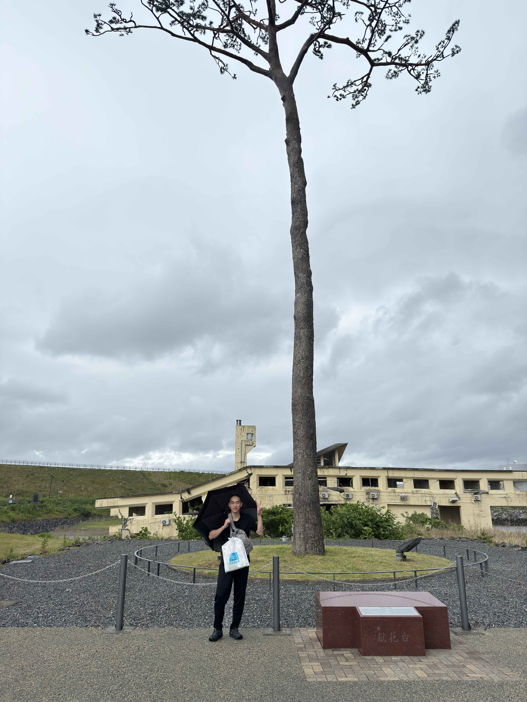

災害フィールドワークで学んだこと

2025年6月1日
岩手県陸前高田市と大船渡市で実施された災害フィールドワークに参加しました。津波伝承館の視察や防災アドベンチャー体験を通じて、防災意識の大切さを学びました。
2025年6月1日
岩手県陸前高田市と大船渡市で実施された災害フィールドワークに参加しました。津波伝承館の視察や防災アドベンチャー体験を通じて、防災意識の大切さを学びました。
2025年6月25日
友人と一緒に滝沢総合公園へ遊びに行き、自然の中でリフレッシュしました。広々とした芝生や遊具が充実していてとても楽しかったです。
2025年7月10日
音楽活動のために新しいドラムスティックを購入しました。これで演奏の幅が広がり、より楽しくなりそうです。